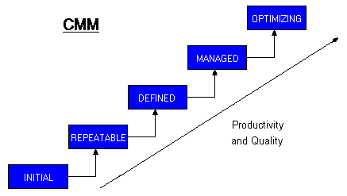

|
Figure 1. Livelli CMM

|
L'organizzazione è capace di costruire prodotti software tenendo traccia dei costi e dei tempi di lavoro in modo che risulta possibile predire il costo e il piano di lavoro per progetti simili. Le predizioni sono tuttavia ancora legate alle persone che hanno lavorato nel progetto
L'organizzazione è capace di costruire prodotti software seguendo un processo standard che mitiga la dipendenza del risultato da specifiche persone. E' necessario prevedere un addestramento esplicito del personale. La capacità predittiva è ancora legata ai progetti sviluppati in passato
L'organizzazione è capace di costruire prodotti software impostando una fase di predizione dei costi e del piano di lavoro basandosi su una classificazione dei compiti e dei componenti e su metriche di misura dei loro costi e tempi di sviluppo. Questo livello non è rappresenta ancora la capacità massima in quanto mancano procedure per la gestione delle modifiche a livello di paradigmi, metodologie e strumenti.
L'organizzazione segue un processo che include parti di meta-processo volte a valutare il processo stesso al fine di introdurre elementi di adattamento e miglioramento.